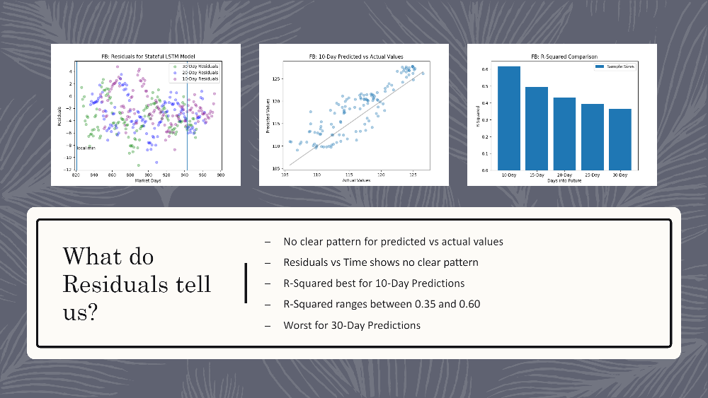
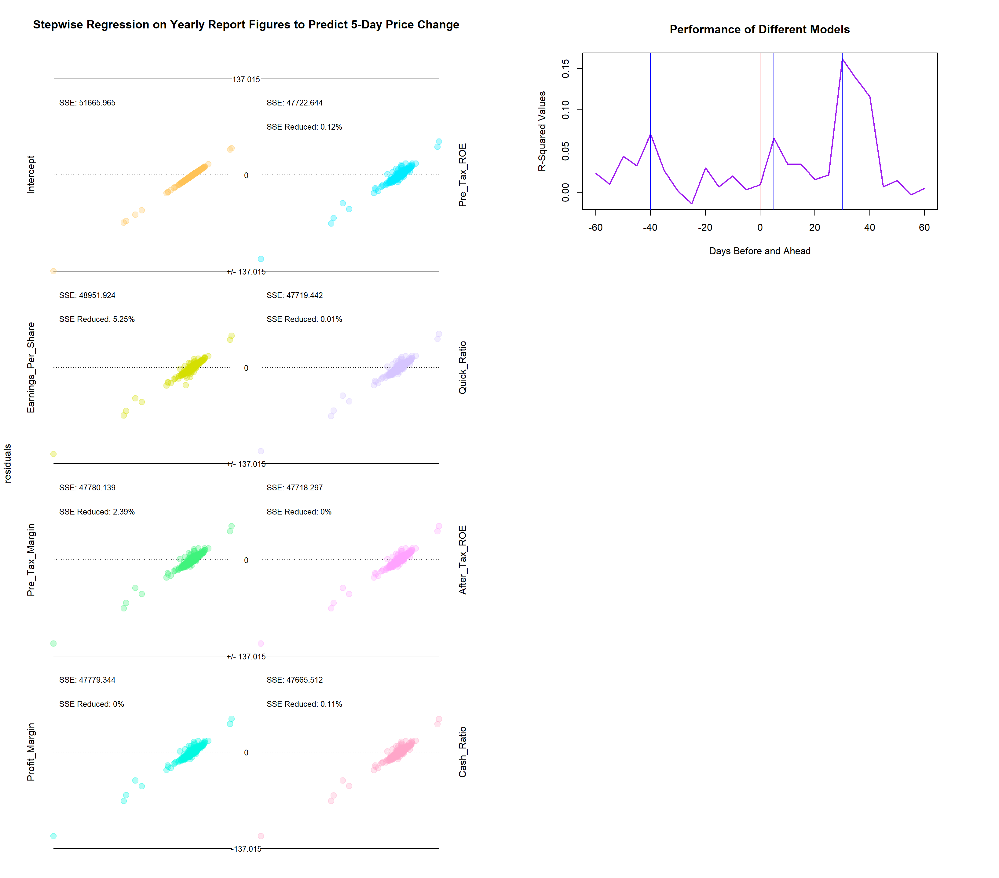
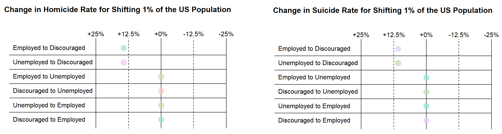
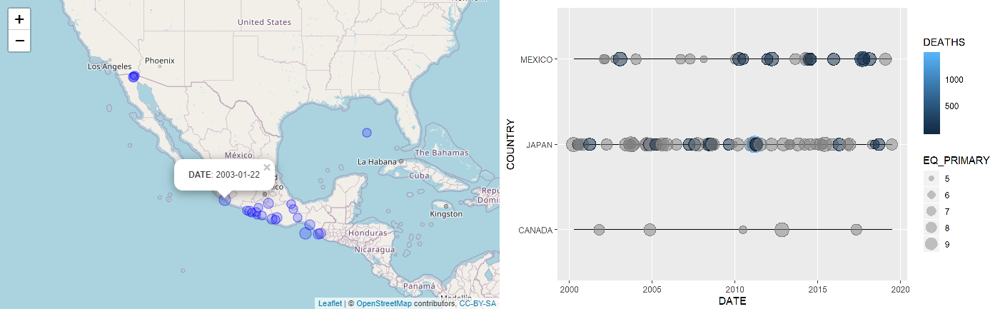
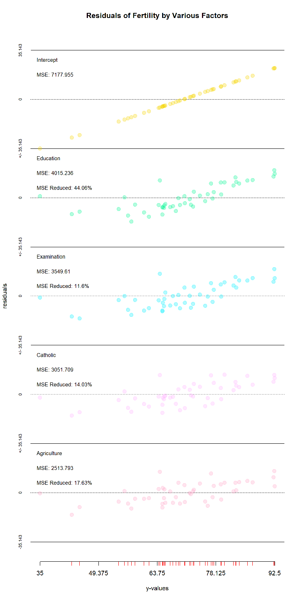

Pearson's Data Workshop
The world is awash in data. Most of this data is unusable in its role form. To utilize it, we need to wrangle it, build models, and create visualizations. This is the job of Data Analysts, Engineers and Scientsts.
The world is awash in data. Most of this data is unusable in its role form. To utilize it, we need to wrangle it, build models, and create visualizations. This is the job of Data Analysts, Engineers and Scientsts.
Data on many of the most pressing issues of the day are available. Tired of hearing media personalities talk past one anohter, I dug into the data to better understand the nature of one of our most pressing problems.
Sometimes the results of regression analysis are difficult for even a statistician to interpret. Rope Ladders are a convenient visualization to make even complex models intuitively understanable.
This is a project intended to explore how effective machine learning using RNN networks is for predicting stock prices. The project examines how well LSTM models predicted the prices of five technology stocks. Ultimatley, it finds that these models work well with cyclic and gradual acyclic changes, but not sudden acyclic changes.
 Goto Stock Price Prediction ProjectThis project joins a Convolutional Neural Network (CNN) with a Recurrent Neural Network (RNN) to train a model to create captions for images. The project piggybacks on Google's InceptionV3 model to save on training time for the CNN.
 Goto Image Captioning Project
Goto Image Captioning Project
This project is a dashboard showing the results from Japanese elections, and allowing the user to explore hypothetical electoral allainces. The dashboard consists of a ternary plot and a map. One can also save the ternary plot one is looking at to do comparisons between election years and hypothetical coalitions. This is the first Shiny App I made, so some of the code is a bit rough.
 Goto Alliance Builder
Goto Alliance Builder
Concerned about police shootings in the United States, I build this package to facilitate exploring the Washington Post's dataset on police shootings. Built using Shiny in R, this package not only allows one to filter the data, but also includes numerous visualizations breaking down shootings by race, age, weapons, location, and other variable.
 Goto Police Shootings Dashboard
Goto Police Shootings Dashboard
How much do yearly reports effect stock prices? Are their contents mostly anticipated, leading them to have little effect? Do investors rush to respond to them, so that their effect is mostly felt the day they are released? Or, is their contents absorbed over time as news articles slowly diseminate their implications? This project investigated when quarterly reports are most effective at predicting stock prices--ultimatley finding peaks at 5 and 30 business days after the end of the quarter.
 Goto Quarterly Reports ProjectOriginally part of a statistics final for Hierarchic Modeling, I chose to revist the project and better explore the factors contributing or detracting from School Performance in Washington State. If you are wondering where to enroll your children, the answer is Grant, Pend Oreille, Stevens, or Kitsap County. Otherwise, the results are similar to what one woudl expect: poverty (as measured by the number of students on food assistance) is a strong predictor of poor school performance. Combining poverty with a large non-white population is a strong factor as well. Having more students per teacher has a slightly negative effect, but higher enrollment is associated with better performance--perhaps the effect of parents seeking out better schools.
 Goto Washington Schools Project
Goto Washington Schools Project
In response to COVID-19, most states locked down, which unfortunately contributed to sharp increases in unemployment. Some critics raised the question of whether the lockdowns were worse than the virus. This however, is an empirical question. How does the suicide, homicide, and general deathrate differ in counties with high vs low unemployment? How is it affected by U3 (standard unemployment) vs U5 (unemployment with discouraged workers included)? This project aims to shed some light on these questions, ultimately finding that while a 1% increase in standard unemployment has little effect, a 1% move toward U5 unemploymnet results in roughly a 10% increase in homicide and suicide rates (though these are small numbers to begin with).
 Goto Project for Unemployment DeathsThis is a project created to help wtih analyzing NOAA data on earthquakes. First, it includes a new geom for ggplot2 for creating timelines of earthquakes or simliar data that consist of time and two other quantitative variables. Second, it includes a function for geospatially plotting earthquake data using Leaflet.
 Goto Earthquakes ProjectThis project uses linear algebra to perform a regression one variable at a time, and show how the residuals change as each variable of the design matrix is regressed from the response vector.
 Goto Step Regression PackageThis is a package for building ternary plots. It is the first R package I developed, and was a learning experience for me. I learn best by doing, and building this package taught me a lot about package development and how classes work in R. Rather than working with an advanced plotting package like ggplot2, lattice, or tile, this is instead built from scratch using R's base graphics capabilities.
 Goto TeaSet Package
Goto TeaSet Package
Doctoral candidate at the University of Washington specializing in Data Science. Experience using data to examinine politics, markets, policing, unemployment, and health.